What it looks like
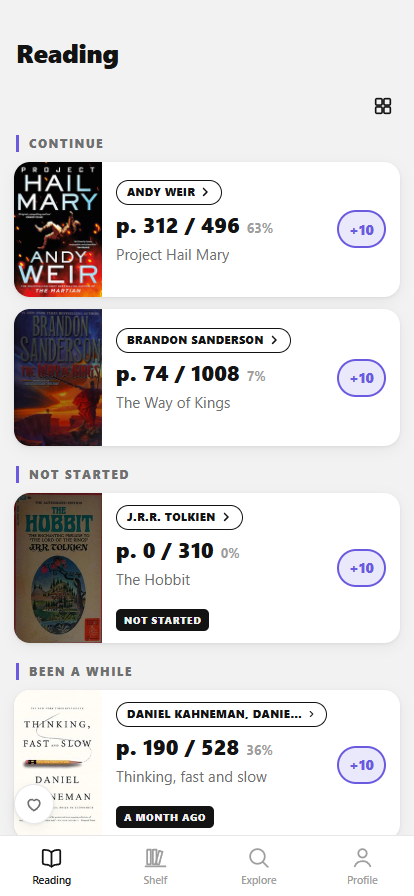
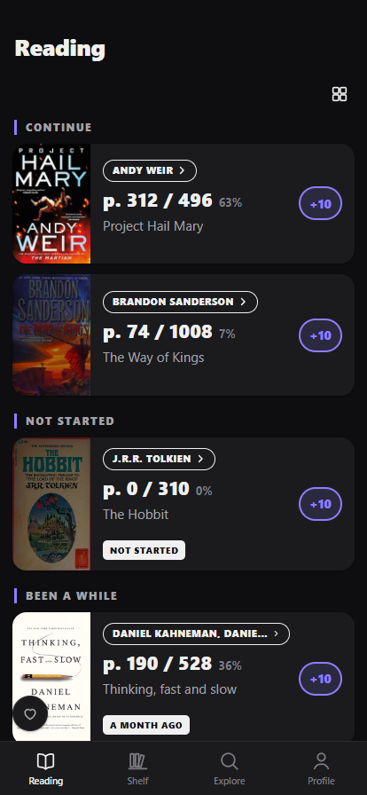
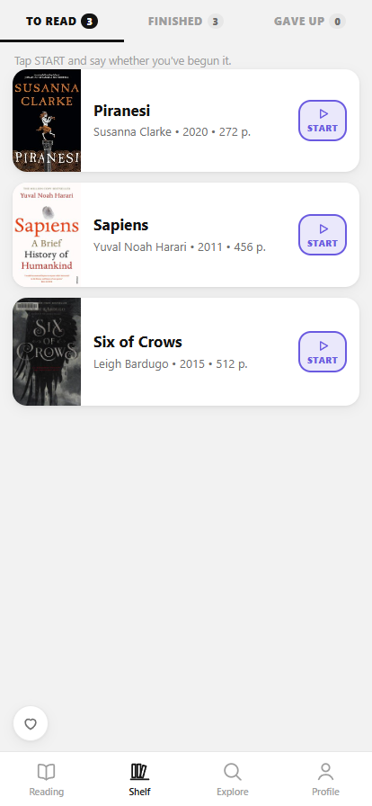
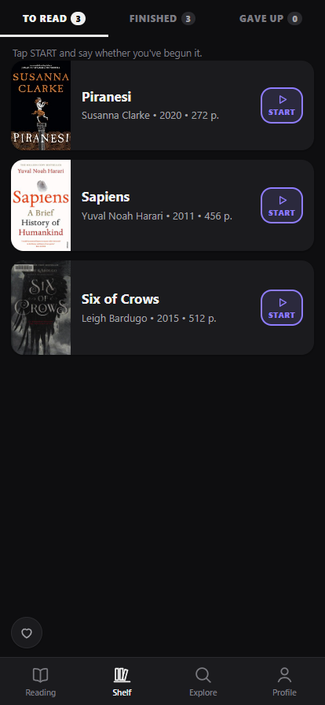
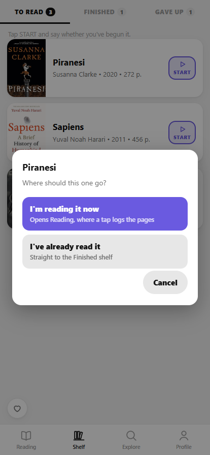
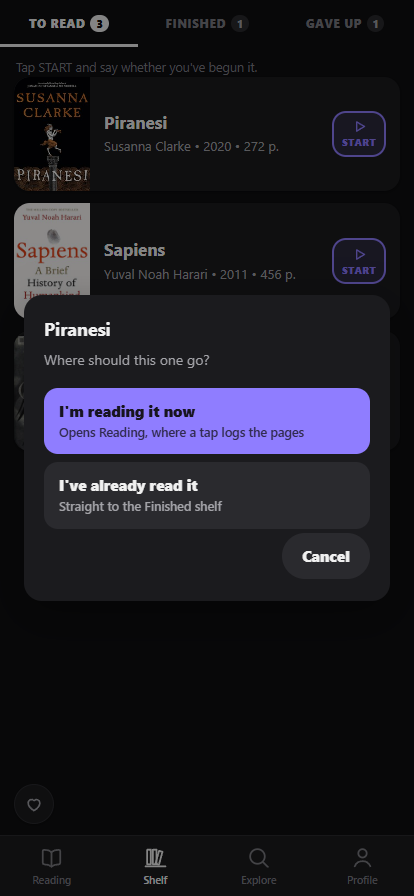
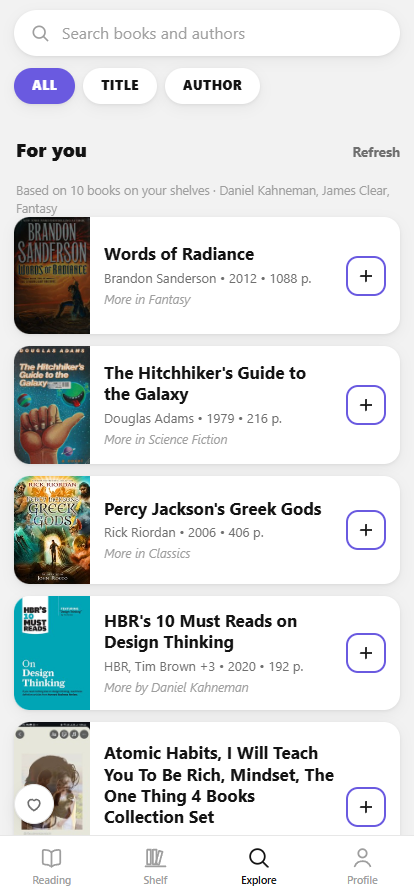
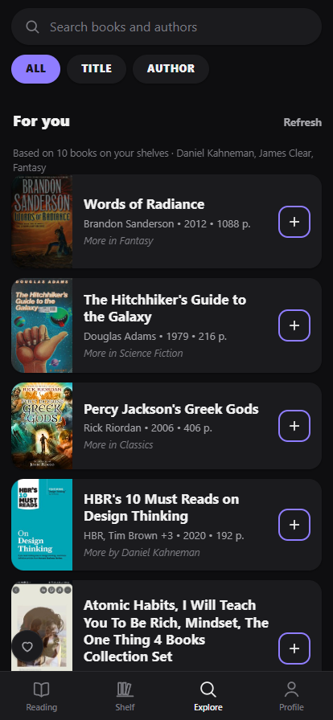
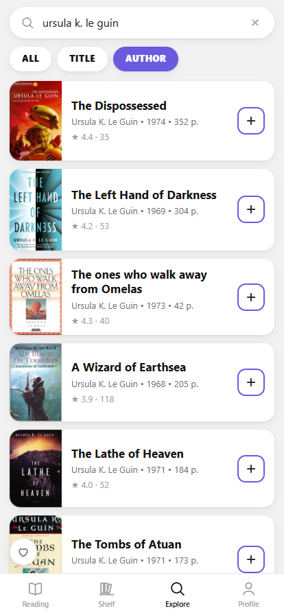
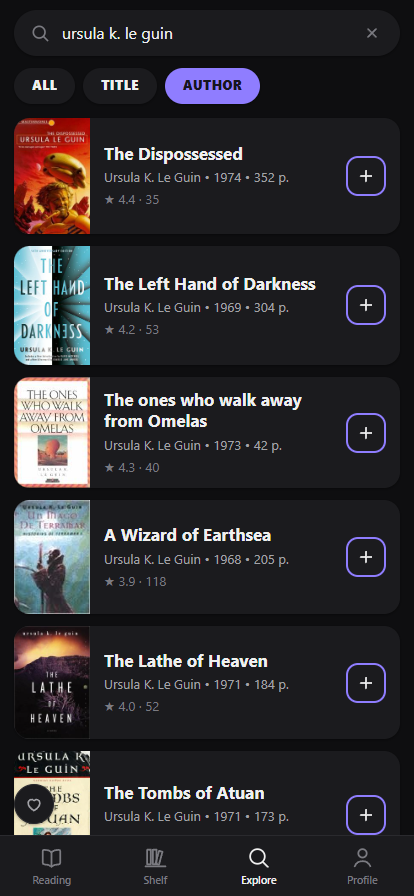
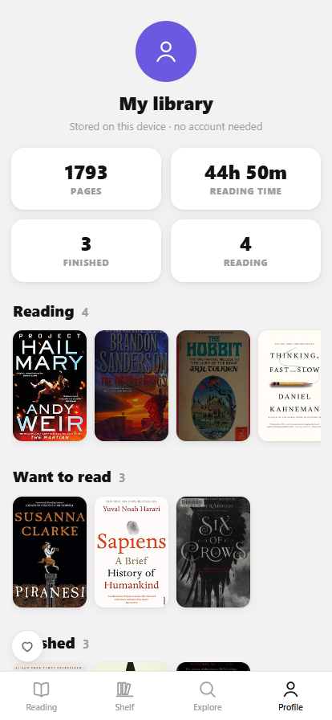
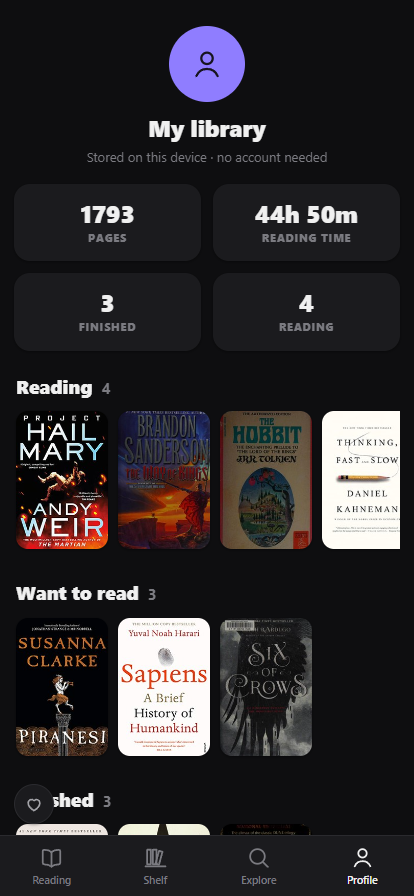
What it does
-
A list that knows where you stopped
Continue, Not Started and Been a While. Each card shows the page you're on (
p. 312 / 496) and moves forward with one tap — with Undo. -
Pages, not vague percentages
Quick
+10 / +25 / +50steps or the exact page you closed on. The page count comes from the catalogue and you can correct it for the edition actually in your hands. -
How much is left, in hours
“184 pages left — about 4h 36m at an average pace.” An estimate, and the app says so rather than pretending to know how fast you read.
-
A shelf that tells you where things are
To read, Finished and Gave up, each tab carrying its count. START asks whether you've begun the book or already read it, then opens the tab it moved to — no hunting for where it went.
-
Recommendations that explain themselves
“For you” is computed on your device from your own shelves — the authors you finished and the subjects those books share. Anything already in your library is left out, and every card says why it's there.
-
Search that stays on the book
Scoped to ALL, TITLE or AUTHOR, with unofficial “summaries” and workbooks pushed below the book they were written about. Trending this week and a genre strip when you have nothing to type.
-
Your year, added up
Pages read, hours, books finished and the months you actually read in — computed from your own reading log, which never leaves the browser. JSON export/import moves the lot to another device.
Where the data lives
Your library never leaves the device — it's stored in the browser's own
localStorage. There's no sync and no account, so moving to a new
phone means Profile → Export on the old one and Import on the new one.
Book data and covers come from Open Library, a project of the Internet Archive. It needs no key and allows browser requests directly, which is why this app has no server component at all — not even a proxy.
Installing it
iPhone
Open it in Safari, then Share → Add to Home Screen.
Android
Open it in Chrome and accept the Install prompt, or use the menu → Install app.
Desktop
It just runs in the browser — no install needed.
Installing is worth it for a reason beyond convenience: Safari clears script-writable storage for sites you haven't opened in a while, so a reading log kept in a browser tab can quietly disappear. Installed to the home screen, it's exempt — and it opens like an app and works offline.
What it isn't
A free project, not affiliated with the Internet Archive, Goodreads or any bookseller. There are no affiliate links and nothing to buy. Being local-first also means no friends, no reviews and no sync between devices — those need a server and accounts, which is exactly what this doesn't have.
Book series aren't modelled yet: Open Library's series data is inconsistent enough that a cycle currently shows up as separate books. Coverage of non-English editions is thinner than English, though searching in Cyrillic does work.